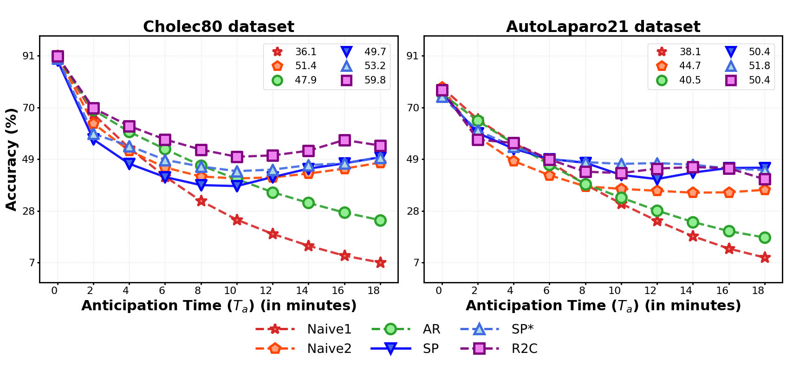

This application demonstrates how future predictions and recognized classes can be translated into textual contextual awareness. The LLM model can be prompted to reply to questions based on its current understanding of the video and its predicted values.
Abstract
Purpose
Real-time surgical phase anticipation is crucial for improving operating room efficiency and patient safety. While existing recognition approaches excel at identifying current surgical phases, they provide limited foresight into future procedural steps, restricting their intraoperative utility. Similarly, current anticipation methods are constrained to predicting short-term events or singular occurrences, neglecting the dynamic and sequential nature of surgical workflows. To address these limitations, we propose SWAG (Surgical Workflow Anticipative Generator), a unified framework for phase recognition and long-term anticipation of surgical workflows.
Methods
SWAG employs two generative decoding methods—single-pass (SP) and auto-regressive (AR)—to predict sequences of future surgical phases. A novel prior knowledge embedding mechanism enhances the accuracy of anticipatory predictions by integrating statistical priors into token initialisation. The framework addresses future phase classification and remaining time regression tasks. Additionally, a regression-to-classification (R2C) method is introduced to map continuous predictions to discrete temporal segments. SWAG's performance was evaluated on the Cholec80 and AutoLaparo21 datasets.
Results
The single-pass classification model with prior knowledge embeddings (SWAG-SP*) achieved 53.5% accuracy in 15-minute anticipation on AutoLaparo21, while the R2C model reached 60.8% accuracy on Cholec80. SWAG's single-pass regression approach outperformed existing methods for remaining time prediction, achieving weighted mean absolute errors of 0.32 and 0.48 minutes for 2- and 3-minute horizons, respectively.
Conclusion
SWAG demonstrates versatility across classification and regression tasks, offering robust tools for real-time surgical workflow anticipation. By unifying recognition and anticipatory capabilities, SWAG provides actionable predictions to enhance intraoperative decision-making. The project webpage is available at https://maxboels.github.io/swag.
Methods

Our proposed model, illustrated in Figure 2, comprises a vision encoder, a temporal aggregation module based on self-attention, compression and pooling mechanisms, and a future prediction module that can operate with either a single-pass (SP) or an auto-regressive (AR) decoder. While our model uses classification for the recognition task, it can use either classification or regression for anticipation. This architecture also includes a novel token embedding initialization strategy based on the recognised class and the temporal position of the decoded target token.
Results

Model performance (accuracy) of surgical phase recognition and anticipation on Cholec80 and AutoLaparo21 up to 18 minutes, with mean values over 18 minutes.
Conclusion
We introduced SWAG, a pioneering framework that unifies surgical phase recognition and long-term anticipation through generative modeling. Our framework demonstrates:
- Superior performance over naive baselines in classification tasks
- Competitive results in regression tasks, particularly for remaining surgery duration predictions
- Successful integration of prior knowledge in future-generated tokens
- Real-world applicability through implementation in a practical software application
Clinically, SWAG's real-time phase anticipation capabilities offer valuable support for intraoperative decision-making, with potential to enhance both patient safety and procedural efficiency. Our evaluation on Cholec80 and AutoLaparo21 datasets validates SWAG as a robust solution for surgical workflow anticipation.
Future Works
- Enhance the generative process with dynamic confidence-based adjustments for more reliable and robust predictions in clinical scenarios.
- Develop a vision-language-action framework by integrating language inputs to enable direct response to surgical team prompts.
- Incorporate multiple input modalities including language, audio, and proprioceptive sensory data from surgical robots.
- Expand training labels to cover both surgical phases and specific action triplets for finer-grained workflow prediction.
- Address challenges related to anatomical differences, surgeon skill, and patient-specific factors for improved real-time adaptability.
BibTeX
@article{boels2024swag,
title = {SWAG: Long-term Surgical Workflow Prediction with Generative-based Anticipation},
author = {Maxence Boels and Yang Liu and Prokar Dasgupta and Alejandro Granados and Sebastien Ourselin},
year = {2024},
journal = {Submitted to IJCARS}
}